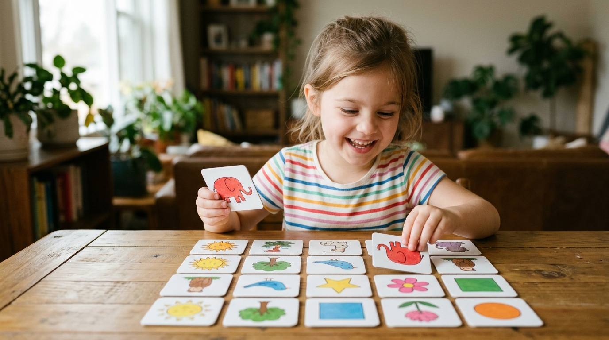

La mémoire de votre enfant se travaille : 10 jeux simples pour l'aider à mieux retenir ses leçons
Qui n'a jamais vu son enfant répéter dix fois d'affilée une règle de grammaire ou une poésie les yeux fixés au plafond, pour constater cinq minutes plus tard qu'il a tout oublié dès qu'on lui pose la question autrement ? La mémoire n'est pas un enregistreur automatique passif : c'est un muscle d'association. Si l'information n'est pas reliée à une image, à une émotion, à une histoire ou à un mouvement, elle s'évapore instantanément. Plutôt que de transformer les révisions en corvée de perroquet, découvrez dix jeux éprouvés, amusants et fondés sur les sciences cognitives pour aider votre enfant à mémoriser durablement avec le sourire.

Illustration pédagogique – Rubrique Développement de l'Intelligence de l'Enfant | Merlin SIMO
1. Comment fonctionne la mémoire de l'enfant
Pour aider un enfant à retenir, il faut d'abord comprendre comment ses neurones stockent l'information. La mémoire humaine ne fonctionne pas comme un disque dur d'ordinateur où l'on enregistre un fichier en un clic. Elle procède en trois temps successifs :
- L'encodage : L'information est captée par les sens (vue, ouïe, toucher). Si l'attention n'est pas focalisée, l'encodage est flou.
- La consolidation : Le cerveau tisse des liens entre cette information nouvelle et ce qu'il connaît déjà (grâce au sommeil et aux répétitions).
- La récupération : La capacité à aller repêcher le souvenir dans les archives mentales au moment voulu.
La majorité des enfants qui « oublient » leurs leçons n'ont pas un problème de mémoire : ils ont un problème d'encodage (ils ont lu distraitement sans images mentales) ou un problème de récupération (ils n'ont jamais été entraînés à restituer l'information sans regarder la feuille).
2. Les jeux pour muscler la mémoire de travail (3 à 7 ans)
Chez les plus jeunes, la priorité consiste à élargir la capacité de la mémoire de travail immédiate tout en développant le contrôle de l'inhibition motrice.
🎮 Jeux pour les 3-7 ans
Jeu 1 : La valise magique
Le premier joueur commence : « Dans ma valise, je mets... une pomme ». Le deuxième poursuit : « Dans ma valise, je mets une pomme et un chapeau ». Le troisième ajoute un élément en répétant toute la chaîne dans l'ordre exact. Ce jeu classique entraîne l'ordre séquentiel et la concentration d'écoute.
Jeu 2 : Le détective des objets disparus (Jeu de Kim)
Disposez 5 ou 6 objets du quotidien sur une table (une clé, une gomme, une cuillère, une petite voiture, une bille). Laissez l'enfant observer 30 secondes, puis demandez-lui de fermer les yeux. Retirez un objet. L'enfant doit identifier l'objet manquant en un clin d'œil !
Jeu 3 : Le robot inversé
Dites une série de 3 chiffres simples (ex: 2 - 5 - 8). L'enfant doit vous les répéter à l'envers (8 - 5 - 2). Cet exercice muscle la manipulation active en mémoire de travail.
3. Les jeux d'association et d'imagerie mentale (7 à 12 ans)
Dès l'école primaire, les leçons deviennent plus abstraites (dates d'histoire, définitions de sciences, règles d'orthographe). Le secret des champions de mémoire consiste à transformer chaque mot abstrait en image vivante et absurde.
🎮 Jeux pour les 7-12 ans
Jeu 4 : L'histoire folle des mots difficiles
Si votre enfant doit retenir une liste de 5 mots de vocabulaire compliqués, construisez ensemble une micro-histoire loufoque qui les relie. Le cerveau adore l'incongru et le rire : une image absurde se grave dix fois plus vite qu'une liste froide.
Jeu 5 : Le mini-palais de la mémoire dans la maison
Associez chaque partie d'une leçon à un meuble de sa chambre : l'introduction sur la poignée de porte, le grand 1 sur le lit, le grand 2 sur le bureau, la conclusion sur la fenêtre. Pour réciter, l'enfant ferme les yeux et fait virtuellement le tour de sa chambre : les souvenirs réapparaissent à chaque étape du parcours !
Jeu 6 : Le jeu des 7 différences éclair
Observer deux illustrations similaires pendant 45 secondes pour relever les anomalies sans aide. Cet exercice aiguise la mémoire visuelle immédiate.
4. Les astuces mnémotechniques pour retenir les leçons scolaires
Les phrases mnémotechniques ne sont pas des gadgets : ce sont des ancres cognitives reconnues par les psychologues pour soulager la charge mentale :
- Pour les conjonctions de coordination : « Mais où est donc Ornicar ? » (Mais, ou, et, donc, or, ni, car).
- Pour l'ordre des planètes du système solaire : « Mon Vieux Tu M'as Jeté Sur Une Nappe » (Mercure, Vénus, Terre, Mars, Jupiter, Saturne, Uranus, Neptune).
- Pour les adjectifs de couleur invariables : inventer de courtes rimes rythmées.
Encouragez votre enfant à inventer ses propres formules mnémotechniques avec ses héros de dessins animés ou ses passions personnelles : une formule qu'il invente lui-même ne s'efface jamais.
5. Les 10 jeux concrets à tester dès ce soir à la maison (suite)
🎯 4 jeux supplémentaires pour la maison
Jeu 7 : Le quiz en miroir (l'enfant devient le maître)
Donnez le cahier de cours à votre enfant : c'est lui qui vous pose les questions du contrôle ! Faites exprès de vous tromper sur une question : vous verrez sa joie immense de vous corriger en vous réexpliquant la règle exacte.
Jeu 8 : Les flashcards illustrées
Sur des petits cartons carrés, écrivez la question au recto (ex: « 7 × 8 = ? ») et la réponse au verso. L'enfant s'interroge en autonomie comme avec un jeu de cartes.
Jeu 9 : Le dessin récapitulatif en 60 secondes
Après avoir lu un chapitre de géographie ou d'histoire, l'enfant a 1 minute chrono pour dessiner l'idée clé sans texte. L'encodage visuel ancre la logique profonde.
Jeu 10 : Le saut de grenouille des tables
Réviser les tables de multiplication en sautant à cloche-pied dans le couloir à chaque multiple. Associer le mouvement corporel et le rythme cardiaque stimule la dopamine et la rétention.
6. La règle de la répétition espacée appliquée aux devoirs
Ne faites jamais passer 2 heures d'affilée à votre enfant sur une même récitation la veille de l'évaluation. C'est l'assurance d'un gâchis d'énergie.
Appliquez la formule des petits rappels légers : 10 minutes le lundi soir, 5 minutes le mercredi matin en se brossant les dents, 5 minutes le vendredi avant de dormir. En y consacrant trois fois moins de temps total, l'information sera ancrée pour toute sa scolarité.
 Édition Officielle
Édition Officielle
Éveillez le Génie de votre Enfant
La méthode concrète pour stimuler le potentiel intellectuel, la curiosité naturelle, la mémoire et la créativité des enfants de 3 à 12 ans sans pression ni fausse promesse.
- Le guide pas-à-pas des 7 piliers de la neuroplasticité familiale
- 50 jeux d'éveil cognitif réalisables à la maison sans matériel coûteux
- La méthode du dialogue socratique pour développer l'esprit critique
- Le protocole anti-distraction et gestion sereine des écrans

À propos de Merlin SIMO
Auteur, chercheur en dynamiques cognitives et conférencier. Passionné par la transmission des méthodes concrètes d'apprentissage, il aide les parents, éducateurs et jeunes esprits à déployer tout leur potentiel intellectuel.
Découvrir son parcours & sa vision